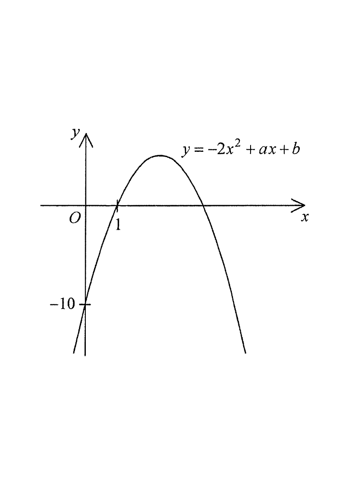

Drag the sliders below to explore the family of curves.
CurveAxis of symmetryx-interceptsy-interceptVertex
HKDSE 2013 · Paper 2 · Q7
The figure shows the graph of
$y=-2x^2+ax+b$,
where $a$ and $b$ are constants. The equation of the axis of symmetry of the graph is
A. $\;x=3$
B. $\;x=5$
C. $\;y=8$
D. $\;x=2$

Figure (original exam diagram)
1 Read the y-intercept
y-intercept of a Quadratic Graph\(y=ax^{2}+bx+c\ \Rightarrow\ y\text{-intercept}=c\)Putting \(x=0\) gives \(y=b\) on the graph, and the curve crosses the axis at \(-10\).
The graph crosses the $y$-axis at $y=-10$. Putting $x=0$ into $y=-2x^2+ax+b$ gives $y=b$, so
$b=-10$
Hint: the constant term $b$ is always the $y$-intercept.
2 Use the x-intercept
The graph passes through the point $(1,\,0)$, i.e. one $x$-intercept is $x=1$. Substitute $x=1$, $y=0$:
$0=-2(1)^2+a(1)-10$
$0=-2+a-10 \;\Rightarrow\; a=12$
Hint: a point on the curve satisfies the equation of the curve.
3 Axis of symmetry formula
Axis of Symmetry of a Quadratic\(x=-\dfrac{b}{2a}\)For \(y=-2x^{2}+ax+b\) the coefficient of \(x\) is \(a\), so the axis is \(x=-\dfrac{a}{2(-2)}=\dfrac{a}{4}\).
For $y=-2x^2+ax+b$ with $-2x^2+ax+b=0$, the axis of symmetry is the mid-line of the two roots, i.e.
$x=\dfrac{-a}{2(-2)}=\dfrac{a}{4}$
Hint: completing the square gives $x=-\dfrac{b}{2a}$ for $y=ax^2+bx+c$.
4 Substitute and evaluate
With $a=12$:
$x=\dfrac{-12}{2(-2)}=\dfrac{-12}{-4}=3$
So the axis of symmetry is the vertical line $x=3$.
Hint: the axis of symmetry is a vertical line $x=\text{constant}$, so options C ($y=8$) is immediately wrong.
5 Check by symmetry
Completing the Square\(y=a(x-h)^{2}+k\ \Rightarrow\ \text{axis of symmetry }x=h\)Rewriting \(-2x^{2}+12x-10\) as \(-2(x-3)^{2}+8\) shows the axis is \(x=3\).
With $a=12,\;b=-10$: $\;y=-2x^2+12x-10=-2(x^2-6x)-10=-2(x-3)^2+8$.
Vertex $(3,\,8)$, hence the axis of symmetry is $x=3$. ✔
Hint: the vertex $x$-coordinate always equals the axis of symmetry.
Answer: A — the axis of symmetry is $x=3$.
PRACTICESimilar question — try it yourself
Question. The graph of \(y=3x^{2}+px+q\) cuts the \(y\)-axis at \(y=8\) and passes through the point \((2,\,0)\). Find the equation of its axis of symmetry.
Show the worked solution
Step 1. The \(y\)-intercept is the constant term, so \(q=8\).
Step 2. The point \((2,\,0)\) lies on the curve: \(0=3(2)^{2}+2p+8=12+2p+8\), so \(2p=-20\) and \(p=-10\).
Step 3. The axis of symmetry is \(x=-\dfrac{p}{2(3)}=\dfrac{10}{6}=\dfrac{5}{3}\).
Step 4. Check by completing the square: \(y=3\left(x-\dfrac{5}{3}\right)^{2}-\dfrac{1}{3}\), so the vertex is \(\left(\dfrac{5}{3},\,-\dfrac{1}{3}\right)\) and the axis is \(x=\dfrac{5}{3}\) ✓.